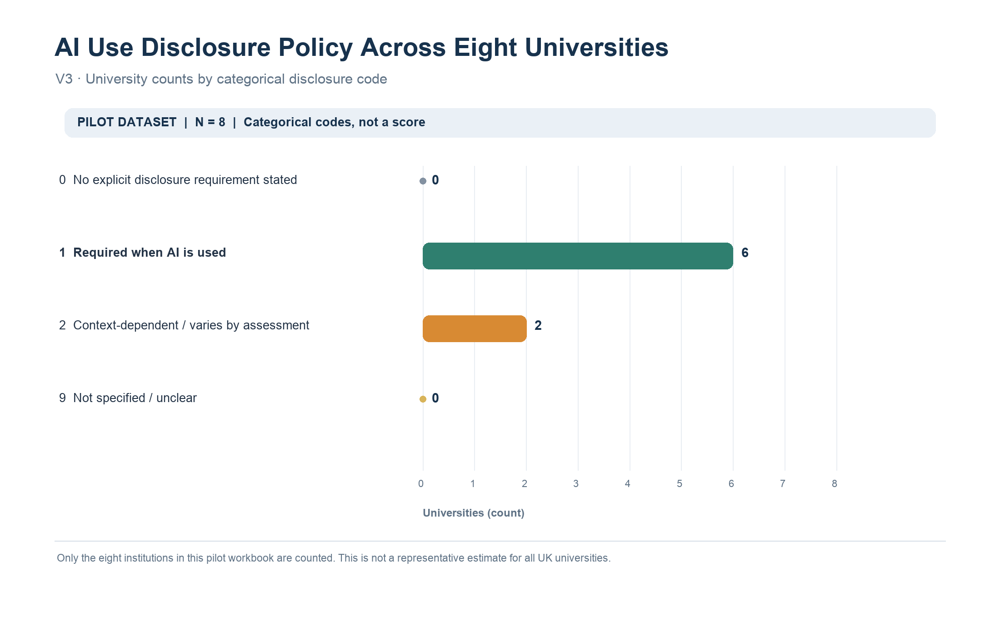
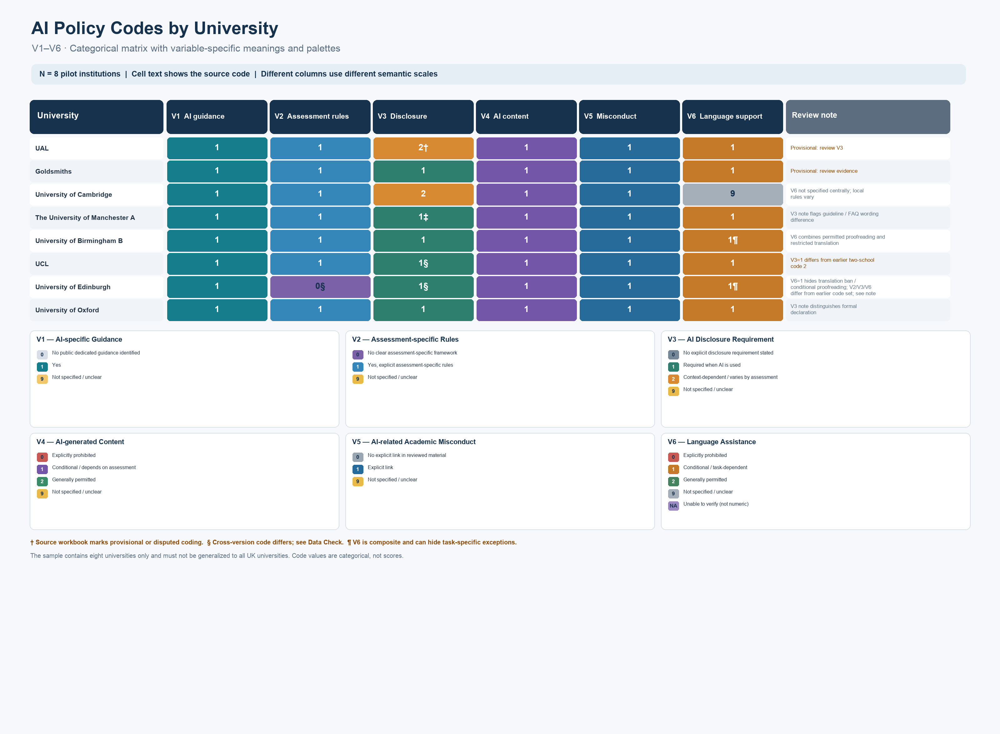

COMM5780M · Week 5
Data Visualisation
Comparing AI Academic Integrity Policies Across Eight UK Universities
Critical Reflection
1. From Data Collection to Visualisation
In Week 4, our group explored how UK universities respond to the use of generative AI in academic assessments. We focused on publicly available university policies and organised the information into numerical categories.
My contribution focused on researching the AI-related academic integrity policies of University College London (UCL) and the University of Edinburgh. I used AI-assisted tools to support parts of the information retrieval and organisation process. However, finding reliable sources and checking whether the information accurately reflected official university guidance remained a significant challenge.
One difficulty was that universities did not always explain AI use in the same way. Some guidance was general, while other rules depended on particular assessments or activities. This made it difficult to classify different policies consistently.
In Week 5, the focus shifted from collecting and organising data to exploring how visualisation could communicate patterns within the dataset.
2. Visualising the Dataset
Using a pilot dataset covering eight UK universities, I used Codex to assist with producing two visualisations through Python scripts.
The first was a horizontal bar chart showing AI disclosure requirements (V3). According to our coding, six universities required acknowledgement or disclosure when AI was used, while two had context-dependent requirements.
The second was a categorical matrix comparing six policy variables across the eight universities. The bar chart made the overall distribution easier to understand, while the matrix provided more detailed comparisons between institutions.
Although these visualisations made the data easier to interpret, they also raised questions about whether numerical categories could fully represent the complexity of university policies.
3. Critical Reflection: Is Data Visualisation Neutral?
One important issue I identified was how decisions made during data collection and classification influenced the final visualisations.
For example, the language assistance variable (V6) combined AI translation, grammar correction and proofreading into one category. However, these activities may be treated differently within university policies. As a result, two institutions with the same numerical code may not necessarily have the same rules.
A similar issue appeared in the disclosure variable (V3), which grouped acknowledgement, citation and formal declaration together. Although these practices are related, they do not always mean the same thing.
This connects to the discussion of data and power in Data Feminism (D'Ignazio and Klein, 2020). Data does not simply represent reality without interpretation. The choices researchers make about which information to collect, how to classify it and how to present it can influence what audiences understand.
I also became more aware of the limitations of AI-assisted research. While AI tools helped organise information and generate visualisations, their outputs still needed to be checked against the original sources. A clear-looking chart does not automatically mean that the underlying data is accurate.
4. Limitations and Future Improvements
The dataset included only eight universities, and some coding decisions remained provisional. Therefore, the findings should be understood as exploratory rather than representative of UK higher education as a whole.
Another limitation was the difficulty of verifying and comparing information from different university websites. Policies sometimes used different terminology or referred to additional guidance at departmental or assessment level.
There were also inconsistencies between earlier and later versions of the coding system. For example, the definition of one variable changed between versions, making direct comparisons less reliable.
If I developed this research further, I would establish clearer coding rules before collecting data, verify each policy against its original source and separate translation from proofreading in the dataset.
I would also consider how different audiences might interpret the visualisations. A simple chart may help university administrators identify general patterns, while researchers may need additional information about policy exceptions and coding decisions.
5. Conclusion
This exercise helped me understand that data visualisation is not simply about turning numbers into charts. It also involves decisions about data collection, classification and representation.
The most important lesson was that making information visually clear does not necessarily make it complete or accurate. Good data visualisation requires both effective communication and critical attention to the limitations of the data behind it.
Data Visualisations
The figures below show the eight institutions in the pilot workbook. The codes are categorical and must not be read as a score or as a representative estimate for all UK universities.


References
D'Ignazio, C. and Klein, L.F. 2020. Data Feminism. Cambridge, MA: MIT Press. [Online]. [Accessed 5 November 2026]. Available from: https://data-feminism.mitpress.mit.edu/
AI Use Statement
Generative AI tools, including ChatGPT and Codex, were used to support parts of the research, data visualisation and portfolio development process.
AI-assisted tools helped with information retrieval and data organisation. Codex was used to generate Python scripts and produce the data visualisations. ChatGPT was also used to support the drafting, organisation and revision of the written reflection.
The reflection draws on my research activities, the project dataset and the methodological limitations identified during the process. The generated visualisations were checked against the available dataset, although not all original university policy sources have been independently reverified.
AI-assisted contributions have been acknowledged to distinguish them from my own research activities and reflections.